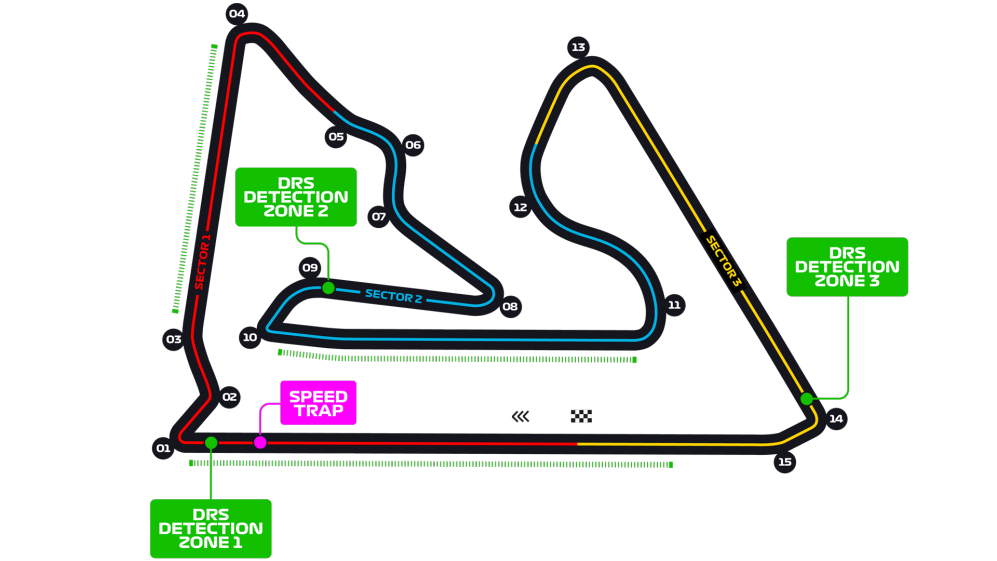
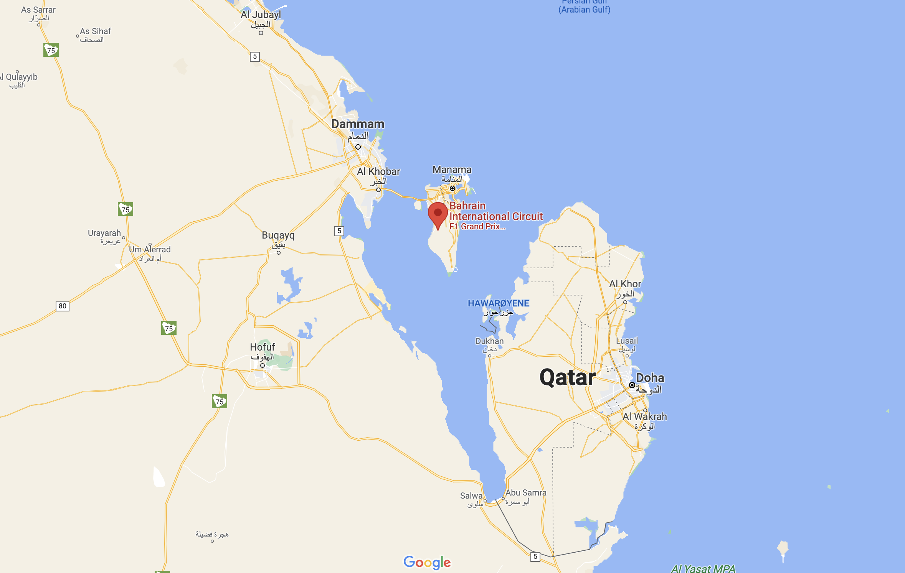
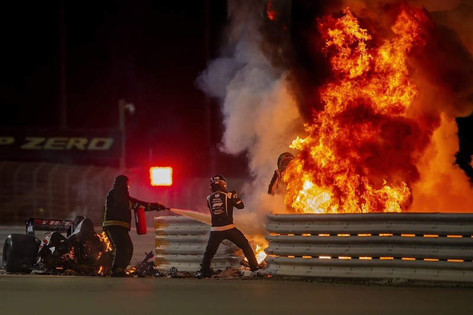
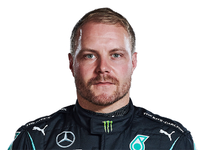
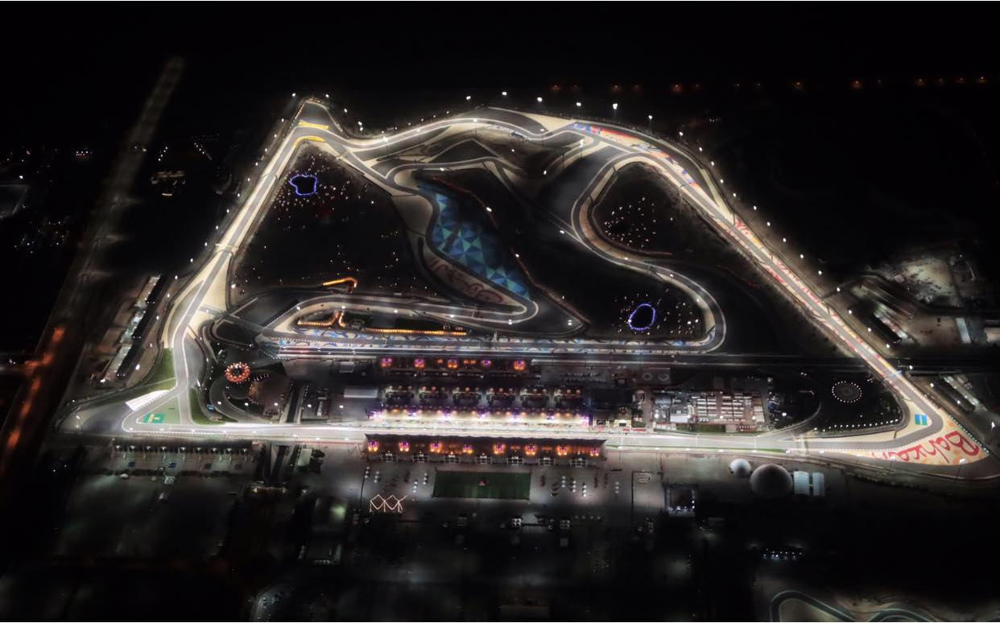
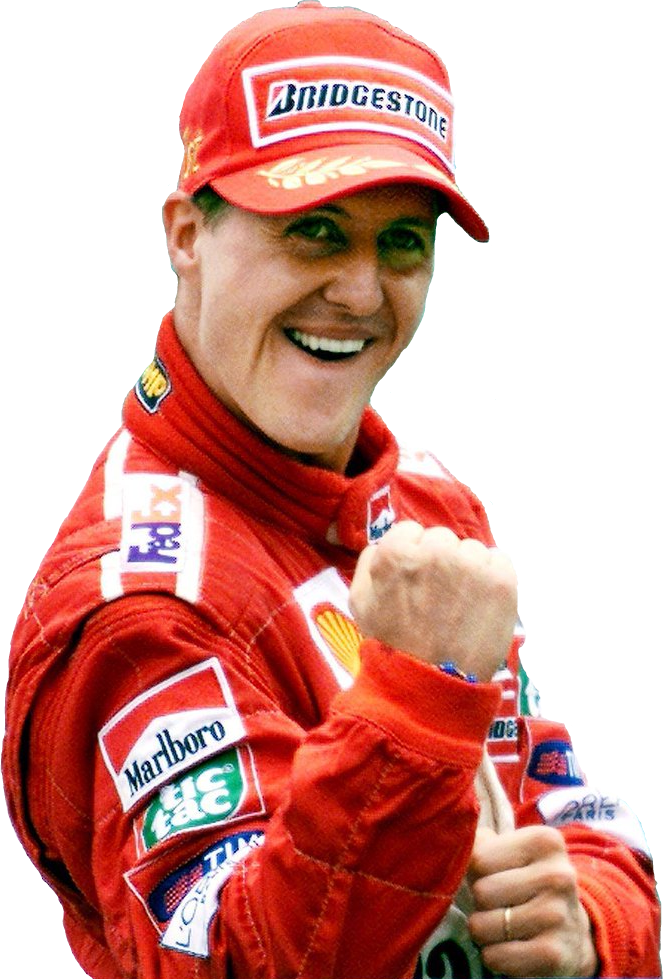

Bahrain International Circuit


Bahrain International Circuit har vært en fast bane på kalenderen siden det første racet i 2004. Siden den gang har banen bygget et rykte som en bane med gode forbikjøringsmuligheter og actionfyllte løp. Banen ligger midt mellom sanddynene i Bahrain noe som gir uforutsigbare senarioer med ørkenivinder og sandstormer. Banen gir også spektakulæe bilder når racet kjøres på natten for å begrense temperaturer siden det er for varmt til å kjøre om dagen. I 2020 ble løpet rød flagget da Romain Gorsjean krasjet på den første runden hvor bilen delte seg i to og ble oppslukt i flammer da bensinen tok fyr.


Løpet var en spennende sesongåpner for 2021 sesongen. Vi så en intens kamp om ledelsen mellom Hamilton og Verstappen som la grunnlaget for tittelkampen de har hatt helt til siste løp i Abu Dhabi. Hamilton og Verstappen hadde mange forbikjøringer på hverandre og det så ut som at Verstappenv skulle vinne da han overtok Hamilton med 5 runder igjen, men han fikk beskjed om å gi plassen tilbake siden han var utenfor banen under forbikjøringen. Etter dette fant ikke Verstappen krefter nok til å ta igjen Hamilton, og det endte med seier til Hamilton, med Verstappen like bak.
Løpets topp tre:





Fun Facts:
Bahrain International Circuit er 5,4 km lang og løpet går over 57 runder.
Formel 1 har kjørt på denne banen med 3 forskjellige ruter. Deriblant er ytterbanen på banen som de kjørte i 2020 hvor rundetiden er den korteste i formel 1 historien på under 1 mninutt.
Michael Schumacher har den kajppeste rundetiden på banen med en tid på 1:30,252 satt i 2004.